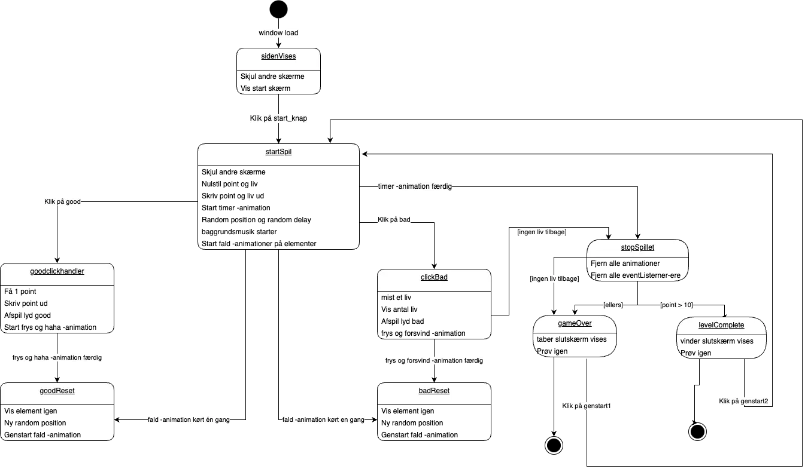

Skitser & grafik
I dette tema skulle vi udvikle et spil fra bunden. Jeg startede med ide og konceptudvikling for at finde en ide til spillets handling. Her brugte vi i klassen en øvelse som hedder 10 ideer. Denne øvelse hjalp mig med at tænke åbent og kreativt. Vi startede med at skitsere for at visualisere og udforske forskellige designkoncepter. Jeg lærte at lave interaktive animationer på websites, med meget fokus på CSS og javascript. Jeg lavede et spil der hedder Fang håbet, hvor man skal fange stjerneskud.
Assets
Vi lærte om assets, og jeg lavede mine spilleskærme og baggrunde i adobe illustartor. Jeg tegnede og designede en forgrund, baggrund, startskærm, spilleskærm, level complete og en game over skærm. Assets er afgørende for at skabe en indlevende, sammenhængende og brugervenlig spiloplevelse. Jeg fik inspiration fra den japanske stil og cartoon.
Elementer
I mit spil skabte jeg karaktererne og baggrundene i Adobe Illustrator. Spillets hovedkarakter, en ninja, tegnede jeg i både en glad og en sur version for at forstærke spiloplevelsen. Ved nederlag ville den sure ninja blive vist, mens den glade ninja dukkede op ved sejr.Vi lærte at optage lyd ogredigere lydeffekter, og derefter integrere disse lydfiler i spillet ved hjælp af JavaScript og HTML. Dette gav mig en forståelse af, hvordan lyd kan forbedre brugeroplevelsen og tilføre dybde til digitale projekter.

ui elementer
Ved hjælp af Adobe Illustrator udviklede jeg et spildesign, der omfattede UI-elementer, karakterdesign og baggrundsgrafik. Jeg designede navigationselementer i form af en start og prøv igen knap. Derudover designede jeg liv til at danne en livsbjælke og brugte css og javascript til at sætte en timer på mit spil. Jeg lærte om nye CSS-teknikker og JavaScript til at tilføje animationer og interaktivitet til spillet. Dette inkluderede at håndtere forskellige events som 'click' og 'animationend' i javascript .
state- & aktivitetsdiagram
Vi brugte State machine og aktivitetsdiagrammer til en detaljeret beskrivelse af vores spil. Aktivitetsdiagrammet klargjorde spillets handling fra start til slut, mens State machine-diagrammet gav et overblik over spillets faser og UI-elementernes tilpasning efter spillets tilstand.
